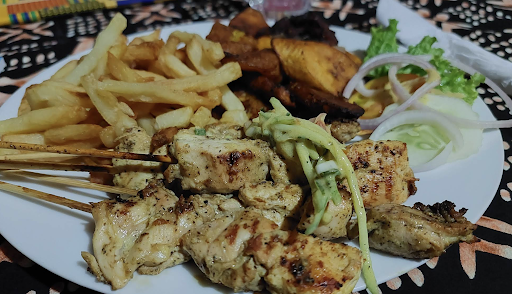
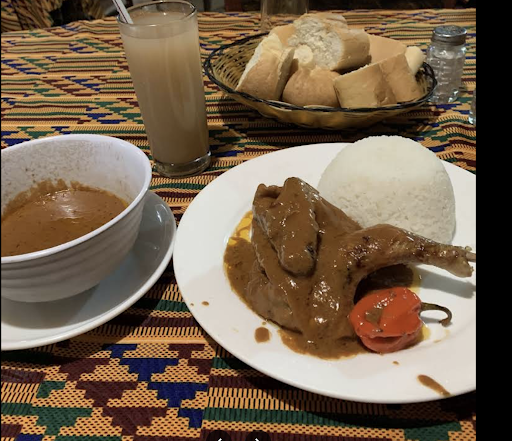

Art
Culinaire
Héritage.
bienvenue to Bistrot Restaurant Le Bafing. Découvrez un sanctuaire de la culture malienne où les bois traditionnelsden masks watch over guests in a room adorned with yellow and black tribal fabrics.
La Carte du Bafing
Des saveurs maliennes raffinées servies dans un environnent of rustic murals and tribal elegance.
Spécialité du Chef
Poulet à la Mangue
3,000FSignature fusion of tender chicken and seasonal mango glaze.
Capitaine Pané
3,000FCrispy breaded river fish served with house-made tartar sauce.
Plats Traditionnels
Poulet Yassa
3,000FMarinated chicken with onions, lemon, and olives.
Fonio Simple
—Traditional ancient grain steamed to perfection.
Fakouye
1,000FSpécialité du Nord du Mali à base de Corchorus leaves.
Boissons Locales
Dableni
300FHibiscus flower infusion, refreshing and vibrant.
Gnamacou
300FFiery ginger drink, cold-pressed with local spice.



An Earthbound Sanctuary.
At Bistrot Le Bafing, every architectural detail is a tribute to Mali. Our columns are wrapped in hand-woven yellow and black tribal fabrics, creating a rhythmic bridge between the past and present.
Entourez-vous de masques africains traditionnels en bois et de murs rustiques qui racontent notre histoire. L'atmosphère est conçue pourr those who appreciate the atypical, the authentic, and the artisanal.
Réflexions des Clients
"Que de bons moments au Baffing... Une cuisine très simple... tellement de gentillesse et de saveur."
"Le meilleur resto qualité prix de bamako. Simple, atypical, and absolutely delicious."
Find Us in Bamako
Our Location
District de Bamako, Mali. The authentic heart of the Bafing district.
Service Hours
Mon - Sat: 11:00 AM - 11:00 PM
Sun: 12:00 PM - 10:00 PM
Réservations
+223 20 00 00 00
contact@lebafing.ml